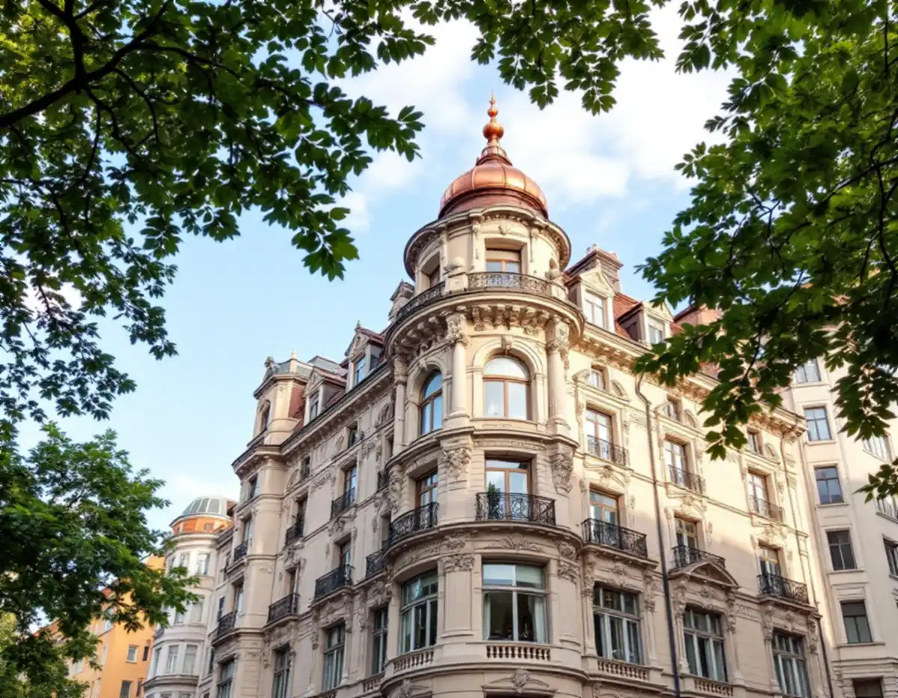
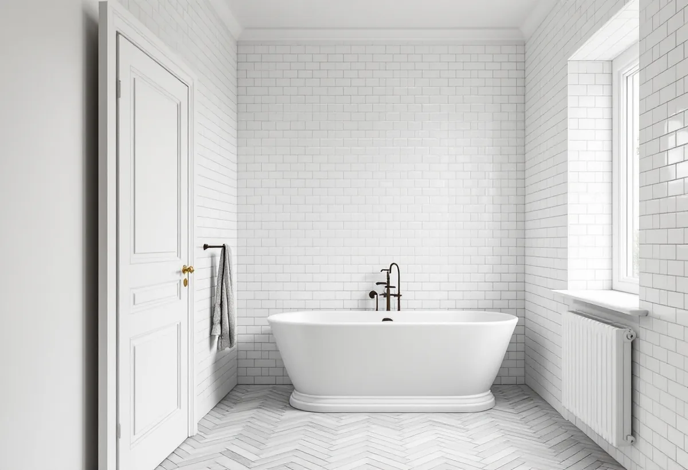

Platsbesök
Vi ser rummet och vad som finns bevarat i och runt det.
Ett badrum på Östermalm ligger ofta i ett hus som är äldre än de regler som gäller för det i dag. Då räcker det inte att fråga vad som är tekniskt möjligt – det kan också finnas värden i lägenheten som lagen skyddar. Geal Entreprenad AB bygger om badrum i bostadsrätter med gratis platsbesök och skriftligt kostnadsförslag, och här går vi igenom vad som gäller innan något rivs.

Stadsmuseets Stockholms Spår om Östermalmstorg beskriver hur esplanadsystemet stakades ut, berg sprängdes bort och den äldre träbebyggelsen revs. Påkostade, tämligen likartade stenhus byggdes i rekordfart, och 1885 bytte Ladugårdslandet namn till Östermalm. Vid Karlaplan bebyggdes den södra delen på 1890-talet med konkava hus efter den cirkelrunda planen, medan husen på norra sidan uppfördes efter en stadsplan från 1911. Först i början av 1970-talet fullbordades Karlaplan med det trekantiga kvarteret Fältöversten.
Norr om Humlegården började man på 1870-talet bygga villor för åretruntbruk, Sveriges första villastad, men stora hyreshus trängde in. Lärkstaden byggdes 1908–17 efter stadsarkitekten Per Olof Hallmans plan med vindlande gator.
I Hedvig Eleonora församling är 5 164 av 7 344 bostäder bostadsrätter enligt områdesfakta för 2025, och 1 119 av lägenheterna i flerbostadshus har fem rum och kök eller fler. I Engelbrekts församling är 5 181 av 6 995 bostäder bostadsrätter.

Enligt bostadsrättslagen 7 kap. 7 § får du inte utan styrelsens tillstånd göra ingrepp i bärande konstruktion, installera eller ändra ledningar för avlopp, värme, gas eller vatten eller ändra ventilationen. Styrelsen får säga nej bara om åtgärden är till påtaglig skada eller olägenhet för föreningen, och den som är missnöjd kan begära att hyresnämnden prövar frågan.
Paragrafen har också ett andra stycke. Har lägenheten särskilda historiska, kulturhistoriska, miljömässiga eller konstnärliga värden krävs styrelsens tillstånd för varje åtgärd som innebär att ett sådant värde påverkas. Det kan gälla även ett byte av ytskikt, om det som tas bort är det som ger rummet dess värde.
Plan- och bygglagen säger samma sak från andra hållet. Boverket skriver om förvanskningsförbudet att en särskilt värdefull byggnad inte får förvanskas och att förbudet gäller vid alla ändringar, såväl exteriört som interiört, oberoende av om åtgärden kräver lov eller anmälan. Boverket påpekar också att välbevarade byggnader från före 1920-talets bebyggelseexpansion med mycket hög sannolikhet uppfyller kriterierna och bör betraktas som särskilt värdefulla om man inte kan motivera varför de inte ska anses vara det.
Stadsmuseet klassar byggnader i blått, grönt och gult, och grått för det som inte bedöms ha tillräckligt höga värden. Enligt Stockholms stad ger kartan en första indikation, och vissa byggnader är ännu inte inventerade. Museet själv beskriver klassificeringen som ett expertutlåtande utan rättslig verkan. Museet tillämpar en tidsgräns på tjugo år för det som ska värderas, så även ett hus från 1970-talet kan vara klassat.
Vill du ha en bedömning kan du mejla Stadsmuseet med adress, fastighetsbeteckning och stadsdel, byggnadsår, eventuella ombyggnader och fotografier. Museet brukar svara inom tre veckor efter att ha fått alla uppgifter. Staden skriver också på sidan om kulturhistoriskt värdefulla byggnader att det inför byggarbetet kan behövas en antikvarisk förundersökning och en konsekvensbeskrivning, och att en sakkunnig inom kulturvärden kan behöva kopplas in.
Vi fotograferar och beskriver det som finns i rummet innan något rivs – dörrar, foder, golv och väggar – så att styrelsen och vid behov museet har ett underlag att ta ställning till.
Ska dörrar och snickerier runt badrummet lagas eller målas om finns mer under snickare och målare. Hur våtrummet byggs, med tätskikt, golvbrunn och intyg, står på sidan om badrumsrenovering.
Vi ser rummet och vad som finns bevarat i och runt det.
Vi slår upp Stadsmuseets karta och läser föreningens regler.
Rummet fotograferas och beskrivs innan något rivs.
Styrelsen får underlaget, och du får ett skriftligt förslag.
Rivning, tätskikt och installationer görs i den ordning styrelsen har godkänt.
Du får intyg, produktblad och bilder på det som byggts in.
Rotavdraget är 30 procent av arbetskostnaden, högst 50 000 kr per person och år och högst 75 000 kr tillsammans med rutavdrag. Material och resor ger inget avdrag.
I en bostadsrätt gäller avdraget enligt Skatteverket bara arbete innanför lägenhetens tak, väggar och golv som du ansvarar för enligt föreningens stadgar. Kakel och klinker, duschar, badkar och handfat och att byta golvbrunn ger avdrag. Att flytta golvbrunnen, flytta eller byta avloppsrör och stambyten ger det inte. Vi drar avdraget direkt på fakturan.
Hur mycket som ska bevaras och anpassas, om rör eller ventilation flyttas och vilka material du väljer väger tyngst. Platsbesöket är gratis och kostnadsförslaget skriftligt.
Tätskikt, golvbrunn, el, VVS och intyg.
Badrumsrenovering i Stockholm →Stenstad, Lärkstaden, Diplomatstaden och Gärdet.
Takrenovering på Östermalm →Dörrar, foder och listverk.
Snickare →Målning inne och ute.
Målare →Slå ihop två lägenheter.
Byggföretag på Östermalm →Husets ursprungliga kulör.
Fasadmålning på Östermalm →Gatufasad, gårdsfasad och lovfrågan.
Fasadrenovering på Östermalm →Stenstaden, Lärkstaden och villorna.
Fönsterbyte på Östermalm →Fönster och glas i Gärdets 1930-talshus.
Fönsterrenovering på Östermalm →Mönsterparkett, lack och olja.
Golvläggare på Östermalm →Slipa om eller underhålla lackade golv.
Golvslipning på Östermalm →Stora lägenheter och kulturvärden.
Köksrenovering på Östermalm →Limfärg i taken, dekor och lov.
Målare på Östermalm →Taklandskapet och balkongerna.
Plåtslagare på Östermalm →Lagning av dörrar, paneler och fasta snickerier.
Snickare på Östermalm →Klassade våningar och bostadsrätt.
Tapetsering på Östermalm →